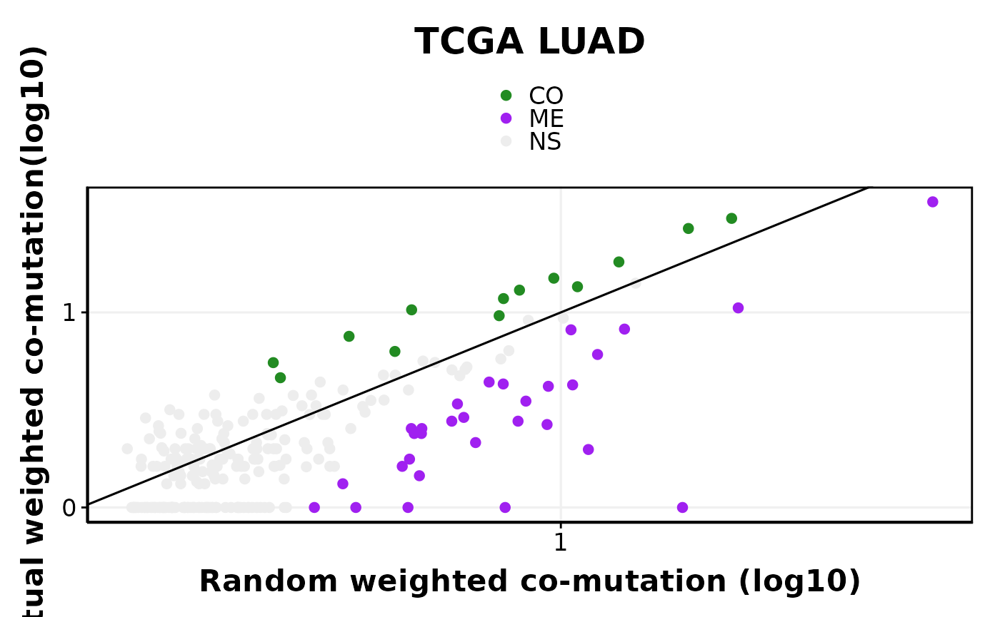

Introduction to SelectSim
Arvind Iyer
2026-06-06
Source:vignettes/introduction.Rmd
introduction.RmdSelectSim infers evolutionary dependencies — co-mutations and mutual exclusivities — between functional alterations across cancer genomes. It estimates expected co-mutation frequencies from individual gene mutation rates and per-sample tumor mutation burden (TMB), then evaluates significance against a permutation null model.

SelectSim Method
This package accompanies the manuscript: Iyer A, Mina M, Petrovic M, Ciriello G (2026). Evolving patterns of co-mutations from tumor initiation to metastatic progression. Nature Genetics.
Installation
- You can install the development version of SelectSim from GitHub with:
# install.packages("devtools")
devtools::install_github("CSOgroup/SelectSim",dependencies = TRUE, build_vignettes = TRUE)- For more details on installation refer to INSTALLATION
Example
- We will run SelectSim algorithm on processed LUAD dataset from TCGA provided with the package.
- Note: This is an example for running a processed data. Check other vignette to process the data to create the run_data object needed as input for SelectSim algorithm.
library(SelectSim)
library(dplyr)
#>
#> Attaching package: 'dplyr'
#> The following objects are masked from 'package:stats':
#>
#> filter, lag
#> The following objects are masked from 'package:base':
#>
#> intersect, setdiff, setequal, union
## Load the data provided with the package
data(luad_run_data, package = "SelectSim")Data Description & Format
- The loaded data is list object which consists of
- M: a list object of GAMs which is presence absence matrix of alterations
- tmb: a list object of tumor mutation burden as data frame with column names (should be) as sample and mutation
- sample.class a named vector of sample annotations
- alteration.class a named vector of alteration annotations
# Check the data structure
str(luad_run_data)
#> List of 3
#> $ M :List of 2
#> ..$ M :List of 2
#> .. ..$ missense : num [1:396, 1:502] 0 0 0 0 0 0 0 0 0 0 ...
#> .. .. ..- attr(*, "dimnames")=List of 2
#> .. .. .. ..$ : chr [1:396] "AKT1" "ALK" "APC" "AR" ...
#> .. .. .. ..$ : chr [1:502] "TCGA-05-4244-01" "TCGA-05-4249-01" "TCGA-05-4250-01" "TCGA-05-4382-01" ...
#> .. ..$ truncating: num [1:396, 1:502] 0 0 0 0 0 0 0 0 0 0 ...
#> .. .. ..- attr(*, "dimnames")=List of 2
#> .. .. .. ..$ : chr [1:396] "AKT1" "ALK" "APC" "AR" ...
#> .. .. .. ..$ : chr [1:502] "TCGA-05-4244-01" "TCGA-05-4249-01" "TCGA-05-4250-01" "TCGA-05-4382-01" ...
#> ..$ tmb:List of 2
#> .. ..$ missense :'data.frame': 502 obs. of 2 variables:
#> .. .. ..$ sample : chr [1:502] "TCGA-05-4244-01" "TCGA-05-4249-01" "TCGA-05-4250-01" "TCGA-05-4382-01" ...
#> .. .. ..$ mutation: num [1:502] 163 253 270 1328 100 ...
#> .. ..$ truncating:'data.frame': 502 obs. of 2 variables:
#> .. .. ..$ sample : chr [1:502] "TCGA-05-4244-01" "TCGA-05-4249-01" "TCGA-05-4250-01" "TCGA-05-4382-01" ...
#> .. .. ..$ mutation: num [1:502] 24 45 40 206 17 18 73 31 176 108 ...
#> $ sample.class : Named chr [1:502] "LUAD" "LUAD" "LUAD" "LUAD" ...
#> ..- attr(*, "names")= chr [1:502] "TCGA-05-4244-01" "TCGA-05-4249-01" "TCGA-05-4250-01" "TCGA-05-4382-01" ...
#> $ alteration.class: Named chr [1:396] "MUT" "MUT" "MUT" "MUT" ...
#> ..- attr(*, "names")= chr [1:396] "AKT1" "ALK" "APC" "AR" ...Running SelectSim
- We use the function
selectX()which generates the background model and results.
| Parameter | Description |
|---|---|
M |
List of GAMs and TMB matrices |
sample.class |
Named vector of sample covariates |
alteration.class |
Named vector of alteration covariates |
min.freq |
Minimum number of samples a feature must be mutated in |
n.permut |
Number of permutations for the null model |
lambda |
Penalty factor for the weight computation |
tau |
Fold change threshold for the weight computation |
maxFDR |
FDR cutoff for calling significant results |
- The function returns a list object which contains the background model and results.
result_obj<- SelectSim::selectX( M = luad_run_data$M,
sample.class = luad_run_data$sample.class,
alteration.class = luad_run_data$alteration.class,
n.cores = 1,
min.freq = 10,
n.permut = 1000,
lambda = 0.3,
tau = 1,
save.object = FALSE,
verbose = FALSE,
estimate_pairwise = FALSE,
maxFDR = 0.25)Interpreting the results
- Lets look into the results
head(result_obj$result[,1:10],n=5)
#> SFE_1 SFE_2 name support_1 support_2 freq_1 freq_2
#> KRAS - TP53 KRAS TP53 KRAS - TP53 154 221 0.30677291 0.4402390
#> EGFR - KRAS EGFR KRAS EGFR - KRAS 57 154 0.11354582 0.3067729
#> STK11 - TP53 STK11 TP53 STK11 - TP53 59 221 0.11752988 0.4402390
#> BRAF - KRAS BRAF KRAS BRAF - KRAS 35 154 0.06972112 0.3067729
#> KRAS - STK11 KRAS STK11 KRAS - STK11 154 59 0.30677291 0.1175299
#> overlap w_overlap max_overlap
#> KRAS - TP53 49 35.8760174 154
#> EGFR - KRAS 0 0.0000000 57
#> STK11 - TP53 13 9.5456386 59
#> BRAF - KRAS 2 0.9821429 35
#> KRAS - STK11 28 25.9230769 59Filtering significant hits
# Filtering significant hits and counting EDs
result_obj$result %>% filter(nFDR2<=0.25) %>% head(n=2)
#> SFE_1 SFE_2 name support_1 support_2 freq_1 freq_2
#> KRAS - TP53 KRAS TP53 KRAS - TP53 154 221 0.3067729 0.4402390
#> EGFR - KRAS EGFR KRAS EGFR - KRAS 57 154 0.1135458 0.3067729
#> overlap w_overlap max_overlap freq_overlap r_overlap w_r_overlap
#> KRAS - TP53 49 35.87602 154 0.3181818 98.63545 58.47438
#> EGFR - KRAS 0 0.00000 57 0.0000000 31.23746 16.91865
#> wES wFDR nES mean_r_nES nFDR cum_freq nFDR2 type FDR
#> KRAS - TP53 -15.97946 0 -13.98576 -1.993698 0 375 0 ME TRUE
#> EGFR - KRAS -11.96329 0 -10.70753 -1.255762 0 211 0 ME TRUE
result_obj$result %>% filter(nFDR2<=0.25) %>% count(type)
#> type n
#> 1 CO 13
#> 2 ME 30Plotting a scatter plot of co-mutation
# Filtering significant hits and plotting
options(repr.plot.width = 7, repr.plot.height = 7)
obs_exp_scatter(result = result_obj$result,title = 'TCGA LUAD')
SessionInfo
# Print the sessionInfo
sessionInfo()
#> R version 4.6.0 (2026-04-24)
#> Platform: x86_64-pc-linux-gnu
#> Running under: Ubuntu 24.04.4 LTS
#>
#> Matrix products: default
#> BLAS: /usr/lib/x86_64-linux-gnu/openblas-pthread/libblas.so.3
#> LAPACK: /usr/lib/x86_64-linux-gnu/openblas-pthread/libopenblasp-r0.3.26.so; LAPACK version 3.12.0
#>
#> locale:
#> [1] LC_CTYPE=C.UTF-8 LC_NUMERIC=C LC_TIME=C.UTF-8
#> [4] LC_COLLATE=C.UTF-8 LC_MONETARY=C.UTF-8 LC_MESSAGES=C.UTF-8
#> [7] LC_PAPER=C.UTF-8 LC_NAME=C LC_ADDRESS=C
#> [10] LC_TELEPHONE=C LC_MEASUREMENT=C.UTF-8 LC_IDENTIFICATION=C
#>
#> time zone: UTC
#> tzcode source: system (glibc)
#>
#> attached base packages:
#> [1] stats graphics grDevices utils datasets methods base
#>
#> other attached packages:
#> [1] dplyr_1.2.1 SelectSim_0.1.6
#>
#> loaded via a namespace (and not attached):
#> [1] sass_0.4.10 generics_0.1.4 tidyr_1.3.2
#> [4] rstatix_0.7.3 lattice_0.22-9 digest_0.6.39
#> [7] magrittr_2.0.5 evaluate_1.0.5 grid_4.6.0
#> [10] RColorBrewer_1.1-3 iterators_1.0.14 fastmap_1.2.0
#> [13] Matrix_1.7-5 foreach_1.5.2 doParallel_1.0.17
#> [16] jsonlite_2.0.0 backports_1.5.1 Formula_1.2-5
#> [19] purrr_1.2.2 doRNG_1.8.6.3 scales_1.4.0
#> [22] codetools_0.2-20 textshaping_1.0.5 jquerylib_0.1.4
#> [25] abind_1.4-8 cli_3.6.6 zigg_0.0.2
#> [28] rlang_1.2.0 withr_3.0.2 cachem_1.1.0
#> [31] yaml_2.3.12 otel_0.2.0 tools_4.6.0
#> [34] parallel_4.6.0 ggsignif_0.6.4 ggplot2_4.0.3
#> [37] ggpubr_0.6.3 rngtools_1.5.2 Rfast_2.1.5.2
#> [40] broom_1.0.13 vctrs_0.7.3 R6_2.6.1
#> [43] ggridges_0.5.7 lifecycle_1.0.5 fs_2.1.0
#> [46] car_3.1-5 ragg_1.5.2 pkgconfig_2.0.3
#> [49] desc_1.4.3 RcppParallel_5.1.11-2 pkgdown_2.2.0
#> [52] bslib_0.11.0 pillar_1.11.1 gtable_0.3.6
#> [55] Rcpp_1.1.1-1.1 glue_1.8.1 systemfonts_1.3.2
#> [58] xfun_0.58 tibble_3.3.1 tidyselect_1.2.1
#> [61] knitr_1.51 farver_2.1.2 htmltools_0.5.9
#> [64] rmarkdown_2.31 carData_3.0-6 compiler_4.6.0
#> [67] S7_0.2.2